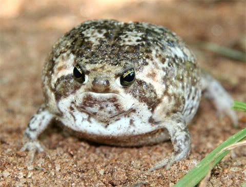
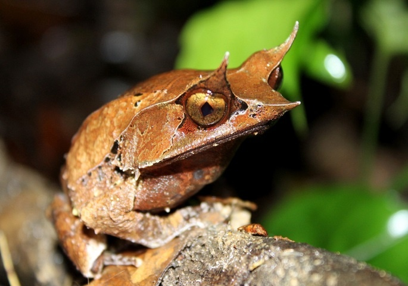
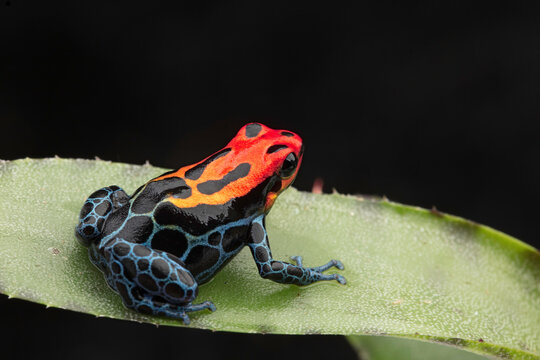

The Desert Rain Frog
The desert rain frog, also known as the Boulenger's short-headed frog, is a species of frog in the Brevicipitidae family. It is found on a narrow strip of sand between the sea and the sand dunes of Namibia and South Africa. This frog is also an endangered species due to increasing human settlement and land-use changes.The Long-Nosed Horned Frog
The long-nosed horned frog, also known as the Malayan horned frog or Malayan leaf frog, is a species of frog found in the rainforest areas of southern Thailand, Peninsular Malaysia, Singapore, Sumatra, and Borneo. It has remarkable camouflage and is unlikely to be seen unless it moves to catch some unknowing prey.Poison Dart Frog
Poison dart frog is a type of frog which are native to tropical Central and South America. There are over 175 species of poison dart frogs in the family Dendrobatidae. These species all have brightly colored bodies. This bright coloration is correlated with the toxicity of the species, making them aposematic. They are small frogs, most of which are the size of a paper clip

